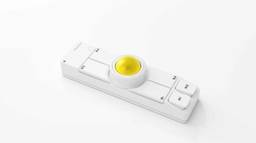
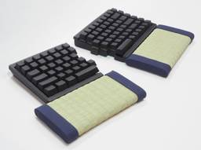
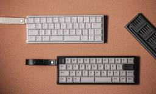
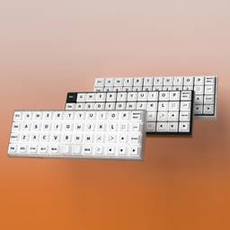
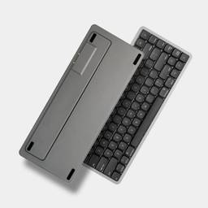
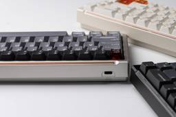
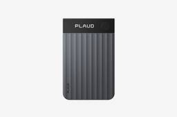
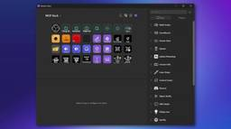

TALPKEYBOARD BLOG
https://www.talpkeyboard.com/
TALPKEYBOARDは、2017年に開業したメカニカルキーボードパーツ専門ショップです。 このブログでは、パーツレビュー・製品比較・技術考察などを中心に、キーボードを楽しむための情報を発信しています。 一部の記事にはアフィリエイトリンクが含まれます。
フィード

Keychron Nape Pro用25mm交換トラックボール｜7色展開で8月28日発売 1
1
TALPKEYBOARD BLOG
今回は、Keychron Nape Proで使用できる**25mm交換用トラックボール**の紹介です。Nape Pro本体に装着されているトラックボールを、清掃時や交換時に取り外して入れ替えられる純正アクセサリーです。国内では**2026年8月28日発売予定**。価格は1個**1,540円**で、ブラック、ホワイト、シルバー、ブルー、パープル、イエロー、オレンジの7色が用意されています。
12時間前

畳のパームレスト「コテマクラ」フタゴ｜熊本県八代産いぐさを使った分割キーボード向けパームレスト 2
TALPKEYBOARD BLOG
今回は、西田畳店が製作する畳のパームレスト **「コテマクラ」フタゴ** の紹介です。熊本県八代産のいぐさを使用した天然素材のパームレストで、分割キーボードに合わせて19cm幅のパームレストを2個1組にした製品です。以前から販売されている製品ですが、2026年7月28日に発生した「令和8年熊本地震」では、いぐさの産地である八代市も被災しました。現在の商品ページでは、**売上の一部を令和8年熊本地震の義援金に充てる**ことも案内されています。
17時間前

Chosfox Init40｜42キー・3モード対応の40%ロープロファイルキーボード｜8月25日発売 1
TALPKEYBOARD BLOG
今回は、Chosfoxが発売を予定している40%ロープロファイルキーボード **Init40** の紹介です。Init40は42キーのコンパクトな配列に、Kailh Choc V2対応ホットスワップPCB、オールアルミケース、RGB、有線・2.4GHz・Bluetoothの3モード接続を組み合わせたモデルです。これまでChosfoxが展開してきたGeonixシリーズはオーソリニア配列でしたが、Init40は一般的なキーボードに近い、各段が横方向にずれた配列を採用しています。発売は**2026年8月25日22時（日本時間）**の予定です。[Chosfox Init40 プレ告知ページ](https://chosfox.com/pages/init40)
2日前

Chosfox X Masro Geonix Rev.2.5｜Choc V2対応40%ロープロを細部まで改良 1
TALPKEYBOARD BLOG
今回は、ChosfoxとMasroによる40%ロープロファイルキーボード **[Geonix Rev.2.5](https://chosfox.com/g5grx3)** の紹介です。Geonixは、Kailh Choc V2スイッチを使うコンパクトな一体型キーボード。Rev.2.5では基本的なデザインを引き継ぎながら、ケース構造、スペースキー、内部構造、キーキャップ、接続方式などを改良しています。40%キーボードらしい小ささに加えて、フルアルミとセミアルミのケース、5種類のChoc V2スイッチ、2UまたはDual 1Uのスペースキーを選べるなど、構成の自由度も高くなっています。
2日前

Akko Air 01｜Mac向けに設計したAkko初のChocV2 ロープロファイルキーボード 1
TALPKEYBOARD BLOG
今回は、Akkoの75%ロープロファイルメカニカルキーボード **[Akko Air 01](https://amzn.to/4cqIcJm)** の紹介です。Air 01は、Akkoとして初めて発売したロープロファイルメカニカルキーボードです。薄型のKailh製メカニカルスイッチ、CNC加工アルミケース、ガスケットマウントを採用し、有線・2.4GHz・Bluetoothの3方式で接続できます。
3日前
Keychron Orca echo｜トラックボールとホイール搭載の49キー無線分割キーボード 1
TALPKEYBOARD BLOG
今回は、Keychron、ギズモード・ジャパンを運営するメディアジーン、Keychronの国内正規輸入代理店コペックジャパンによる共同開発プロジェクトとして登場した、左右分割キーボード **Keychron Orca echo（キークロン オルカ エコー）** の紹介です。49キーの左右分割レイアウトに、右手側のトラックボール、左手側のホイール、さらに左右両方のユニットへ上下スクロールパッドを搭載しています。キー入力に加えて、カーソル移動やスクロール操作までキーボード上で行える構成です。現在はGIZMARTでクラウドファンディング形式の先行販売が行われています。
4日前

LUMINKEY Magger 68 HE Professional｜Jade ProとCNCアルミを採用した68キー磁気式キーボード 1
TALPKEYBOARD BLOG
2024年11月に発売開始の Magger 68 HE Professionalは、ラピッドトリガーや8,000Hzポーリングレートに対応した65%サイズのHEキーボードです。ただ、いま見ると8Kやラピッドトリガーだけなら、それほど珍しい仕様ではありません。このモデルで気になるのは、**Gateron Magnetic Jade Proスイッチ、CNC加工の6063アルミケース、サンドイッチマウントまで組み合わせていること**。ゲーム向けの磁気式キーボードですが、打鍵感や筐体の作りもかなり意識した製品です。
5日前

Plaud Note Pro｜音声・写真・テキストをまとめてAIへ渡すカード型ボイスレコーダー 1
TALPKEYBOARD BLOG
今回は、カードサイズのAIボイスレコーダー **[Plaud Note Pro](https://amzn.to/4wtQfwg)** の紹介です。会話を録音してAIで文字起こし・要約する製品ですが、個人的に気になったのは録音性能よりも**マルチモーダル入力**です。> **マルチモーダル入力とは**、音声だけでなく、画像や文字など複数種類の情報をAIへ入力する方法です。Plaud Note Proでは音声を録音しながら、本体ボタンを押して重要な箇所をハイライトできます。さらにスマートフォンから写真やテキストを追加し、これらをまとめてAIによる文字起こしや要約に利用できます。([Plaud.ai US][2])
7日前

Elgato Stream Deck MK.2｜定番入力デバイスがMCP対応でAI連携デバイスへ 1
TALPKEYBOARD BLOG
今回は、15個のLCDキーを備え、PCのさまざまな操作をボタンに割り当てられる定番入力デバイス [Elgato Stream Deck MK.2](https://amzn.to/4wqCkqD) の紹介です。発売は2021年。発売から5年が経過し、すでに見慣れた製品です。それを2026年になってあらためて取り上げる理由は、5月28日にElgatoが発表したMCP（Model Context Protocol）対応です。
7日前

Mac mini M4にアヒルのくちばしを追加｜前面から電源を入れられるスタンド
TALPKEYBOARD BLOG
AliExpressで M4 Mac mini がめちゃくちゃかわいくなるスタンドを見つけました。黄色い台座にMac miniを載せると、前面の2つのUSB-Cポートが目のように見え、その下にオレンジ色のくちばしが追加されてアヒルになります。しかしこれ、単なる飾りではありません。くちばし部分が、Mac miniの電源ボタンを前から操作するためのボタンになっています。
8日前
8BitDo Retro 87 Keyboard Clear Blue｜N64発売30周年を記念したクリアブルーのメカニカルキーボード
TALPKEYBOARD BLOG
8BitDoから、メカニカルキーボード「Retro 87 Keyboard」の新モデル「**Clear Blue**」が登場しています。1996年から2026年までの**N64発売30周年を記念した「N64 30th Collection」**のひとつで、当時のゲーム機周辺で印象的だった透明ブルーをモチーフにしたカラーリングを採用しています。8BitDo公式ショップでの価格は**99.99ドル**。2026年8月14日出荷予定として案内されています。
9日前
Keychron C100 8K｜10×10に100キーを並べた巨大マクロパッド
TALPKEYBOARD BLOG
一般的なフルサイズキーボードに近い100キー構成ながら、文字入力用の通常配列は設定されておらず、最大96キーをユーザー自身で割り当てて使用するという少し変わった製品です。QMKとKeychron Launcherに対応し、ショートカットやマクロなどを自由に設定できます。これだけのキーがすべて必要かどうかは別として、「一般的なキーボード配列という前提をなくし、多数のキーを自由に割り当てて使う」という発想自体は、なかなか面白い製品です。一方で、自作キーボードの世界では、こうした多キー構成や特定用途に特化した配列は以前から多数見られました。個人制作の自作キーボードであれば、自分の用途に特化したものや、実験的・ネタ的な作品として発表することにも意味があります。そのため、KeychronがC100 8Kをあえて量産製品として投入した企画意図については、少々わかりにくさも感じます。Nape ProやOrca Echoなど、最近のKeychronには日本の自作キーボードコミュニティから生まれたレイアウトや発想を連想させる製品も続いています。そうしたニッチなアイデアを量産製品へ取り込むことに一定の市場性を見いだしているのかもしれませんが、それが継続的な製品戦略として成立するのかは別の話でしょう。C100 8Kが実際にどのようなユーザーに受け入れられるのかも含め、Keychronの今後を観察していきたいと思います。
9日前
rabbit r1｜2026年のrabbitOS 2.3でClaude Code・Hermes Agent・OpenClawに対応
TALPKEYBOARD BLOG
rabbit r1は、音声、カメラ、タッチスクリーンなどを使ってAIを操作する小型の専用端末です。発売後もrabbitOSの更新が続き、2026年6月のrabbitOS 2.2ではClaude Code、7月のrabbitOS 2.3ではHermes AgentとOpenClaw Protocol v4への対応が追加されました。([Rabbit][3])現在はPC上で動作するClaude Code、Hermes Agent、OpenClawへ接続し、r1から音声でセッションを開始・継続できるようになっています。([Rabbit][4])2024年に登場したAIアシスタント端末から、継続的なソフトウェア更新によって、**外部AIエージェントを持ち歩いて操作するための物理インターフェース**へ用途を広げている点が、2026年現在のrabbit r1を見るうえで重要な変化です。
10日前
Keychron Nape Pro｜8月28日一般発売予定｜25mmワイヤレストラックボール
TALPKEYBOARD BLOG
Keychron Nape Proは、25mmトラックボールと6つのカスタムボタン、コントロールダイヤルを細長い筐体にまとめたワイヤレストラックボールです。キーボードのスペースキー手前をはじめ、左右や分割キーボードの中央など複数の位置へ配置でき、OctaShiftによって本体の向きに応じたカーソル方向補正にも対応します。また、ZMKとKeychron Launcherによるキー設定やマクロにも対応しており、単純なポインティングデバイスだけでなく、補助入力デバイスとしても利用できる構成です。
10日前
Pebble Index 01｜MCPにも対応する、ボタンとマイクだけのAI入力リング
TALPKEYBOARD BLOG
Pebble Index 01は、**ボタンとマイクだけという非常にシンプルな構成の音声入力リング**です。基本用途は、思いついたことをその場で記録し、スマートフォン側でメモやリマインダーへ変換することです。しかしWebhookとMCPへの対応によって、文字起こしをClaude CodeやCodexなどへ送り、外部ツールを操作することも可能になりました。
12日前
agentpad13｜AIエージェントの状態をRGBで表示する13キー・オープンソース自作マクロパッド
TALPKEYBOARD BLOG
**agentpad13**は、AIエージェントを使った作業を想定して設計された、13キーのオープンソースマクロパッドです。12個の1Uキーと1個の2Uキーに加え、ロータリーエンコーダー、2軸アナログジョイスティック、静電容量タッチ入力、24個のRGB LEDを搭載しています。特に特徴的なのが、**AIエージェントの状態をRaw HID経由で受け取り、各キーのRGB LEDへ反映する仕組み**です。エージェントごとにキーを割り当て、- Thinking- Running- Waiting- Doneといった状態を手元のマクロパッドから確認できます。PCB、ケースCAD、ファームウェア、製造データ、組み立て手順までGitHubで公開されており、自分でPCBを発注して製作できるところも自作キーボードらしいプロジェクトです。
12日前
AgentDeck｜Claude Code・Codexを物理キーで監視・操作するオープンソースAIエージェントUI
TALPKEYBOARD BLOG
**AgentDeck**は、Claude CodeやCodexなどのAIコーディングエージェントを、Stream Deckやタブレット、ESP32ディスプレイなどの物理デバイスから監視・操作するためのオープンソースプロジェクトです。AIエージェントごとにひとつのキーや表示領域を割り当て、**どのプロジェクトで、どのエージェントが動いているか、処理中なのか、ユーザーからの入力を待っているのか**をリアルタイムに表示します。さらにキーからセッションを開いたり、YES / NOなどの応答を返したり、実行中のエージェントを停止したりすることもできます。重要なのは、AgentDeckが専用ハードウェアそのものではないことです。中心にあるのはローカルで動作するAgentDeck daemonで、Stream Deckをはじめ、ESP32、e-inkディスプレイ、スマートフォン、タブレット、ターミナルなど、さまざまなデバイスをAIエージェント用の「操作面」として利用できます。
12日前
Aina Dune｜Claudeで設定、AIエージェントも呼び出せる 3キー・コンテキストマクロパッド
TALPKEYBOARD BLOG
Aina Duneは、わずか3個の物理キーを備えたmacOS向けのコンテキスト対応入力デバイスです。現在使用しているアプリケーションやオンライン会議などの状況を認識し、**同じ3キーの役割をその場面に合わせて自動的に変更する**ことが最大の特徴です。さらに、ショートカットだけでなくURLやスクリプトを実行でき、Claudeとの会話によって設定やスクリプトそのものを変更できます。
13日前
HY0020｜技適付き超小型BLEモジュールが開く、小型自作キーボードの可能性
TALPKEYBOARD BLOG
**HY0020**は、FDKが展開する超小型のBluetooth Low Energyモジュールです。Nordic **nRF52832**をベースにしながら、サイズは**3.5 × 10.0 × 1.0 mm**。さらに**日本の技適（MIC）を含む各種認証取得済み**で、キーボードやマクロパッドのようなBLE周辺機器へ応用しやすい点が大きな特徴です。自作キーボードの無線化では、モジュールサイズ、実装の難易度、GPIO数、そして日本国内では技適対応が課題になりがちです。HY0020は、そのいくつかをかなり小さなサイズでまとめているモジュールといえます。
13日前
Work Louder Creator Micro 2｜Codexエージェントを物理操作するAIエージェントコントローラー
TALPKEYBOARD BLOG
Creator Micro 2は、Work Louderが開発する小型プログラマブル入力デバイスです。13個のメカニカルスイッチに加えて、ロータリーエンコーダー、平面ジョイスティック、タッチセンサーを搭載。一般的なマクロパッドとして使えるだけでなく、OpenAI Codexと直接連携し、AIエージェントの状態確認や操作を物理デバイスから行えることが大きな特徴です。単純に「ショートカットをキーへ割り当てる」だけではなく、Codex側から送られてくるエージェントの状態をRGBで表示するなど、PCからデバイス側へ情報を返す仕組みも取り入れられています。
14日前
Boardloaf-HE｜約12ドルから製作できる36キー分割Hall Effectキーボード
TALPKEYBOARD BLOG
Boardloaf-HEは、Hanthebot氏が公開している36キーの分割Hall Effectキーボードです。yuburoll氏の36キー分割キーボード「Boardloaf」をベースに、磁気スイッチとHall Effectセンサーを組み合わせたHE仕様へ変更。APC（アクチュエーションポイント調整）とRapid Triggerに対応しながら、安価な部品で製作できることを狙っています。
14日前
olice｜磁石で拡張モジュールを追加できる40% Alice-likeオーソリニアキーボード
TALPKEYBOARD BLOG
oliceは、floookay氏がGitHubで公開している40%クラスのAlice-likeオーソリニアキーボードです。中央のメインキーボードに加えて、左右側面へ磁石とポゴピンで拡張モジュールを着脱できる構造が大きな特徴です。
14日前
aphelo30 v2｜カラフルでかわいいサムキーレス 30キー分割キーボード
TALPKEYBOARD BLOG
aphelo30 v2は、MajinEvelyn氏が公開している30キーの分割キーボードです。片側3×5の15キー構成で、特徴的なのはサムクラスタを完全に持たないこと。一般的な小型分割キーボードでは親指に複数のキーを割り当てますが、aphelo30は作者自身の手に合わせ、親指をキー入力に使用しないレイアウトとして設計されています。
14日前
うちで使ってる害虫撃退グッズ（2026年7月版）｜TALPKEYBOARDセレクション
TALPKEYBOARD BLOG
今回はキーボードとは全く関係はありませんが、夏のお悩みの一つ、害虫問題の対策グッズのご紹介です。うちはなかなかの田舎です。よって自宅周辺は毎日虫たちの襲撃にさらされています。そのため数年に渡り色々なグッズを試してみました。2026年現在これは効くなという害虫撃退グッズをまとめました。侵入防御系と決戦兵器系を選んでいます。ぜひご参考になさってください。
1ヶ月前
アマゾンで気になった分割キーボード（2026年7月版）｜TALPKEYBOARDセレクション
TALPKEYBOARD BLOG
アマゾンで販売している分割キーボードを再度調べてまとめてみました。
1ヶ月前
アマゾンで気になったマウス・トラックボール（2026年7月版）｜TALPKEYBOARDセレクション
TALPKEYBOARD BLOG
今回は新旧問わず、最近気になったマウスやトラックボールに限定して紹介します。
1ヶ月前
アマゾンで販売している薄型折りたたみ系キーボード｜TALPKEYBOARDセレクション
TALPKEYBOARD BLOG
アマゾンで見つけた薄型折りたたみ系キーボードをまとめて、ストアフロントにアップしました。ぜひご活用ください。
1ヶ月前
トラックボール球色々｜TALPKEYBOARDセレクション
TALPKEYBOARD BLOG
以前Xに投稿した、アマゾンで見つけたトラボ球をまとめて、ストアフロントにアップしました。ぜひご活用ください。
1ヶ月前
メーカー製ロープロファイルキーキャップのサイズの理由―Kailh Choc V1から続く寸法の流れ
TALPKEYBOARD BLOG
Tai-Haoの新しいロープロファイルキーキャップ THM（Tai-Hao Mints）は、1Uの外形寸法が16.5×17.5mmです。メーカー製ロープロファイルキーキャップには結構このサイズが多いです。 日本の自作キーボードでは17×17mmの正方ピッチも使われているため、この寸法は少し中途半端に見えるかもしれません。しかしこれは Tai-Haoが新しく考案した独自寸法ではなく、Kailh Choc V1用キーキャップから続く流れの中にある寸法なのです。
1ヶ月前